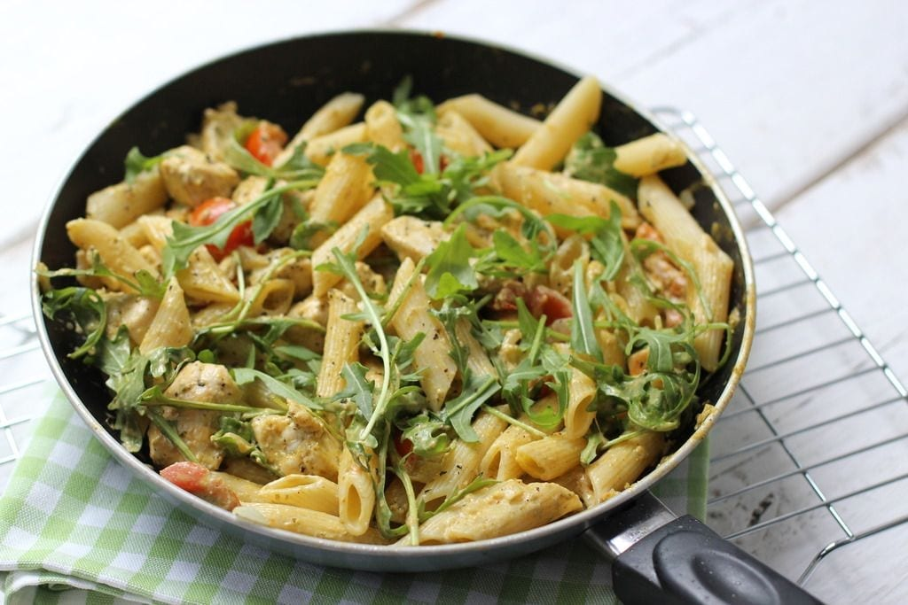

Pasta pesto

Ingrediënten
- 300g spaghetti
- 2el pijnboompitten
- 25g Parmigiano Reggiano
- 1 teen knoflook
- 30g verse basilicum
- 6el olijfolie extra vierge
Bereiding
- Kook de spaghetti volgens de aanwijzingen op de verpakking beetgaar. Rooster ondertussen de pijnboompitten in een koekenpan zonder olie of boter in 3 min. goudbruin. Laat afkoelen op een bord.
- Maal de pijnboompitten, kaas en knoflook in de keukenmachine fijn. Voeg de basilicumblaadjes en olie toe en maal kort tot pesto. Voeg peper en zout toe. Schep 4 el pesto door de spaghetti en serveer op 4 borden.